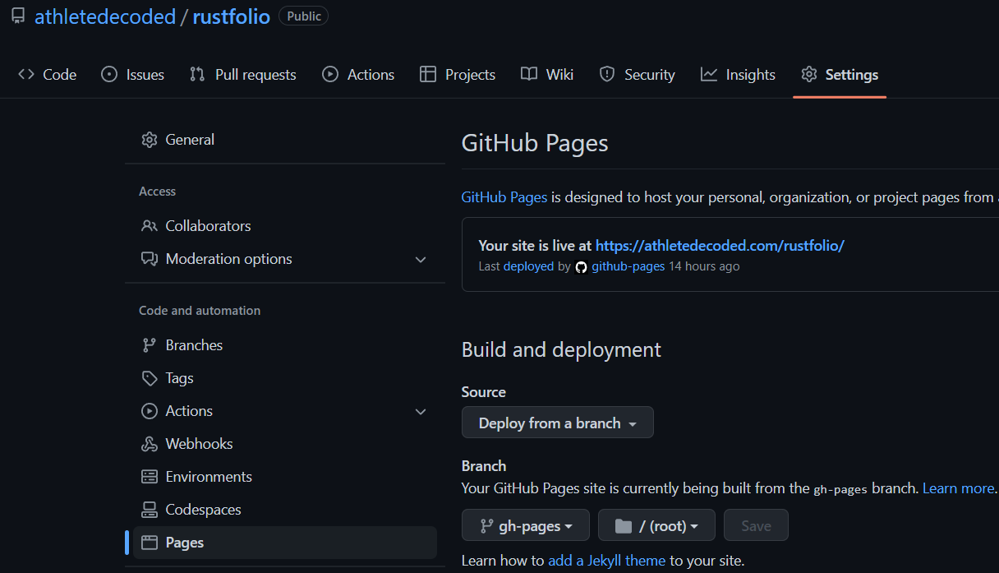
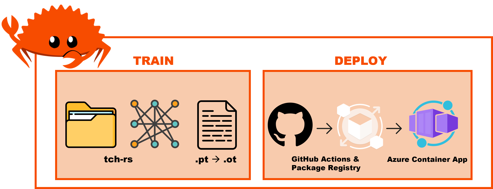

Rustfolio 🦀
Github @athletedecoded
Learning by building Rust for MLOps projects at Duke Univeristy with Noah Gift.
To use this mdbook template
Fork/clone from Github Repo
https://github.com/athletedecoded/rustfolio
Install mdbook
$ make install
Preview mdbook
$ make serve
Deploy to Github Pages
Automatic CI/CD via Github Actions on git push. See .github/workflows/deploy.yml
$ git push origin main
Configure Repo for Github Pages
Ensure repository is serving from gh-pages branch

References
- mdBook Official Docs
- mdBook Automated Deployment with Github Actions
- peaceiris Github Actions for mdBook
Credits: athletedecoded
Rust AWS S3 CLI
Project Repo: https://github.com/athletedecoded/rust-s3-cli
The current AWS CLI is written in Python. For this project I have built a mini AWS S3 CLI using Rust which supports CRUD operations for buckets and objects.

Project Goals/Outcomes
- Develop my first Rust project
- Use Github Codespaces and Copilot
- Integrate the 'AWS SDK for Rust' into a Rust project
Setup
-
Create an AWS IAM User Policy for S3
-
Configure your ~/.aws/credentials file with environment variables:
aws_access_key_id,aws_secret_access_keyandregion
Run
List all S3 buckets
$ cargo run list
List all objects in a specified S3 bucket
$ cargo run list --bucket <bucket_name>
# ex: cargo run list --bucket ids721
Create new S3 bucket
$ cargo run create --bucket <bucket_name>
# ex: cargo run create --bucket ids721
Upload an object to an S3 bucket
NB: Will create bucket if DNE
$ cargo run upload --bucket <bucket_name> --filepath <path_to_file>
# ex: cargo run upload --bucket ids721 --filepath ./test/test.png
Delete an object from an S3 bucket
$ cargo run delete --bucket <bucket_name> --key <object_key>
# ex: cargo run delete --bucket ids721 --key test.png
Delete an empty S3 bucket
$ cargo run delete --bucket <bucket_name>
# ex: cargo run delete --bucket ids721
Get an object from an S3 bucket
$ cargo run get --bucket <bucket_name> --key <object_key>
# ex: cargo run get --bucket ids721 --key test.jpg
CI/CD
Github Actions configured in .github/workflows/rust.yml
Build Executable
$ make release
Progress Log
- Create an AWS IAM User Policy for S3
- Configure Github Codespaces with AWS Toolkit Credential Profile
- Initialise Rust project with AWS SDK for Rust
- Establish basic AWS client connection to list S3 buckets
- Add clap command line parsing for arguments (bucket name, local file name)
- Bucket fxns: list, create new, check if exists, delete if empty
- Object fxns: list objects in bucket, upload to existing bucket, upload to new bucket, delete
- CI/CD with Github Actions
References
- AWS SDK for Rust
- AWS Toolkit Credential Profile
- AWS Credentials for VS Code
- AWS IAM User Policy for S3
Image Compression for Big Data with EFS
Project Repo: https://github.com/athletedecoded/img-compress
Image Compression for Big Data using EFS x Lambda x Rust. Uses downsampling + filtering to perform inplace image compression in parallel and reduce the memory cost of big image data storage. Includes upsampling invocation option to restore image size.

Useage
cargo lambda invoke --remote \
--data-ascii '{"dir": "imgs", "scale_op": "down", "scale_factor": 2, "filter": "Gaussian"}' \
--output-format json \
img-comp
where:
- dir = subdirectory to perform compression on i.e. /mnt/efs/{dir}
- scale_op = "down","up"
- scale_factor = factor to scale width/height
- filter = "gaussian" (default), "nearest", "triangle", "catmullrom", "lanczos3"
Developer Setup
Configure AWS IAM Permissions
- Create an IAM User policy for "LambdaDev" with
AWSLambda_FullAccesspermissions and added custom inline permission config
{
"Version": "2012-10-17",
"Statement": [
{
"Sid": "PermissionsToDeploy",
"Effect": "Allow",
"Action": [
"iam:CreateRole",
"iam:CreatePolicy",
"iam:PutRolePolicy",
"iam:AttachRolePolicy",
"iam:UpdateAssumeRolePolicy"
],
"Resource": "*"
}
]
}
- Add "LambdaDev" access keys to your local ~/.aws/credentials file along with environment variables:
- aws_access_key_id
- aws_secret_access_key
- aws_role_arn (NB: this is copied from the IAM user summary and is formatted as arn:aws:iam::<aws_acct>:user/<iam_user>)
- region
- Create an IAM Role policy named "EFSxLambda" with
AWSLambdaBasicExecutionRole+AWSLambdaVPCAccessExecutionRole+AmazonElasticFileSystemClientFullAccesspermissions
Deploy Lambda Fxn from Developer Environment (i.e. this repo)
# Install cargo-lambda
$ python3 -m venv ~/.venv
$ source ~/.venv/bin/activate
$ make install
# Build Binary
$ make release
# Deploy to AWS
$ make deploy
Setup Cloud9
- Launch Cloud9 console and create an environment with "New EC2 Instance" + "SSM Connection" + "default VPC"
- Once provisioned, click on env details > EC2 instance > manage EC2 instance. Make note of the associated security group listed.
Setup EFS
- Launch AWS EFS console and provision EFS instance
- Once provisioned, click on file system name > network. Make note of the security group id listed.
- Under EFS access points tab > add access point > create with following settings:
- Name: Lambda2EFS
- Root directory path:
/(by default root is /mnt/efs) - Posix User ID: 1000
- Posix Group ID: 1000
- Owner User ID: 1000
- Owner Group ID: 1000
- Access point permissions: 0777
Configure Security Groups
- From EC2 console > security groups > new security group:
- Name = ImgComp
- Description = Mangage img-comp lambda access
- VPC = same as EFS (default)
- Save
- To enable EFS --> Lambda: click ImgComp security group ID > edit inbound rules > Set: type = NFS, protocol = TCP, port range = 2049, source = custom > add the EFS security group ID (from the drop down box)
- To enable EFS --> Cloud9: click Cloud9 security group ID > edit inbound rules > Set: type = NFS, protocol = TCP, port range = 2049, source = custom > add the EFS security group ID (from the drop down box).
- To enable Lambda & Cloud 9 --> EFS: click EFS security group ID > edit inbound rules > add inbound rule for each:
- Set: type = NFS, protocol = TCP, port range = 2049, source = custom > add the ImgComp security group ID (from the drop down box)
- Set: type = NFS, protocol = TCP, port range = 2049, source = custom > add the Cloud9 security group ID (from the drop down box)
Configure Lambda
- Configuration > Permissions > edit execution role > select "EFSxLambda" from above
- Configuration > VPC > edit > select default VPC (to match EFS)
- Configuration > VPC > edit > select security group as ImgComp
- Configuration > File Systems > add EFS + access point + local mount path = /mnt/efs
- Configuration > Env Variables > LD_LIBRARY_PATH = /mnt/efs
Mount EFS to Cloud9
- Launch Cloud9 environment
- Run the following commands to mount to /mnt/efs
# Docs: https://repost.aws/knowledge-center/efs-mount-automount-unmount-steps
# Install efs-ultils (https://docs.aws.amazon.com/efs/latest/ug/installing-amazon-efs-utils.html)
sudo yum install -y amazon-efs-utils
sudo mkdir -p /mnt/efs
# From img-comp EFS > Attach > copy EFS helper command
sudo mount -t efs -o tls <AWS_FS_ID>:/ /mnt/efs
# Switch ownership permissions
sudo chown ec2-user:ec2-user /mnt/efs
sudo chmod 755 /mnt/efs
# Copy local Cloud9 imgs directory to EFS
cp -r imgs /mnt/efs
# check files have been moved over
cd /mnt/efs
ls
Gotchas
- Invokation failure may be insufficient lambda CPU/tmp storage that needs to be reconfigured for higher capacity
References
Automated S3 Backup with AWS x Rust
Project Repo: https://github.com/athletedecoded/s3-backup
Automated serverless S3 backup using AWS Lambda x Rust

What I Learnt
- Deploying AWS serverless using Lambda x S3 trigger
- Configuring S3 Access Points and Roles
Developer Setup
Pre-Configure AWS
- Create an IAM User policy for "LambdaDeveloper" with
AWSLambda_FullAccesspermissions and added custom inline permission config
{
"Version": "2012-10-17",
"Statement": [
{
"Sid": "PermissionsToDeploy",
"Effect": "Allow",
"Action": [
"iam:CreateRole",
"iam:CreatePolicy",
"iam:PutRolePolicy",
"iam:AttachRolePolicy",
"iam:UpdateAssumeRolePolicy"
],
"Resource": "*"
}
]
}
- Add "LambdaDeveloper" keys to your local ~/.aws/credentials file with environment variables:
- aws_access_key_id
- aws_secret_access_key
- aws_role_arn
- region
Note: aws_role_arn is copied from the IAM user summary and is formatted as arn:aws:iam::<aws_acct>:user/<iam_user>
- Create an IAM Role policy for "S3xLambdaAccessRole" with
AmazonS3FullAccessandAWSLambdaBasicExecutionRolepermissions - Allocate 3 x S3 Buckets (SourceBucket, OutputBucket, RubbishBucket) and add an Access Point to each
Deploy Lambda Function
# Install cargo lambda
$ python3 -m venv ~/.venv
$ source ~/.venv/bin/activate
$ make install
# Build binary
$ make release
# Deploy to AWS
$ make deploy
AWS Permissions
- From the AWS Lambda Console > Functions > s3-backup > Configuration > Permissions > change Execution role to preconfigured "S3xLambdaAccessRole"
- From the AWS Lambda Console > Functions > s3-backup > Configuration > Environment variables > set the following env variables coinciding with S3 Access Point ARNs:
SRC_AP_ARN,DEST_AP_ARN,RUBBISH_AP_ARN
NB: Access Point ARNs will be of the format arn:aws:s3:
References
- Cargo Lambda for Rust
- Using the AWS SDK for Rust in AWS Lambda function
- AWS Lambda Events Docs for Rust
- AWS Serverless Rust Demo
- AWS Tutorial: S3 Object Lambda
Distroless & Containerized API Proxy for HuggingFace
Project Repo: https://github.com/athletedecoded/hf-micro
The HuggingFace Hub is implemented as a Python wrapper around the HuggingFace API Endpoints. This project is a distroless and containerized Rust microservice that acts as an API proxy for the HuggingFace API Endpoints. Github Actions allows for automated CI/CD to Azure Containers.

What I Learnt
- Configuring reqwest for GET, POST, PUT, DELETE requests
- Certifying HTTPS using reqwest from within a Docker image -- I spent days debugging and exhausting certification solutions and it all came down to enabling the rustls-tls feature in reqwest and either installing debian ca-certificates or mounting them to Docker at runtime 🤯
- CI/CD with Github Actions to automate Azure container deployment
Setup
Install
$ make install
HuggingFace Access Token
- Generate a HuggingFace personal access token with write permissions
- Configure environment variables below per choice of launching locally or within Docker
To launch locally
- Rename
SAMPLE_ENVto.envand save - Set your HF personal access token in
.env - Run local microservice on localhost:8080
$ make run
To launch within Docker
- Set your HF personal access token in Makefile (line 2)
- Build Docker image
$ make build
Gotchas if you encounter a build failure on "ERROR [internal] load metadata ..." then run
$ rm ~/.docker/config.json
$ make build
- Run Docker image
$ make rundocker
Docker Debugging CA-Certificates
If you have CA-certification issues you may need to manually mount self-signed certificates to the Docker image instead. To do this first generate .pem certificate
# make local certs dir
$ mkdir ./certs
# generate ca-certificates
$ openssl req -x509 -newkey rsa:4096 -keyout ./certs/key.pem -out ./certs/cert.pem -sha256 -days 365 -nodes -subj '/CN=localhost'
Then launch Docker image with mounted certificates
$ make mntcerts
Deploy to Azure
- Provision an Azure Container App and set repository PAT, AZURE_CREDENTIALS secrets according to this repo docs
- Ensure Container App
ingresssetting matches port "8080" - Set a repository secret
HFATto your HuggingFace Access Token git push origin deploy-distrothen manually trigger workflow from GitHub Actions
Useage & Endpoints
Supported endpoints to base URL https://localhost:8080
GET / -- Homepage
GET /api/account -- Returns your HuggingFace account info
POST /api/repo -- Create a new repository
```
POST /api/repo json request body
{
"type": <"model","dataset" or "spaces">
"name": <repo_name>,
"private": <true or false>
}
```
DELETE /api/repo -- Delete a repository
```
DELETE /api/repo json request body
{
"type": <"model","dataset" or "spaces">
"name": <repo_name>
}
```
PUT /api/repo -- Update repository visibility
```
PUT /api/repo json request body
{
"type": <"model","dataset" or "spaces">
"namespace": "<username>/<repo_name>" eg. "ferris/my_repo"
"private": <true or false>
}
```
ToDos
- Configure GET, POST, DELETE, PUSH routes
- Pass environment variables into Docker per docs
- Debug reqwest x Rust x Docker CA Certificate bug
- Configure Actix logging
- Actix HTTP error response handling
- CI/CD & Binary Release
References
- HuggingFace Hub Python Client
- HF access tokens
- HF Hub REST API Endpoints
- Actix extractors
- reqwest crate docs
- TLS Debugging Docker
Rusty Pipe [WiP]
Project Repo: https://github.com/athletedecoded/rusty-pipe
E2E ML Pipeline -- from data to distroless deploy

Train
Download example dataset
$ cd train
$ make dataset
Train model
$ cargo run hymenoptera_data
Convert model for Deploy
$ python3 -m venv ~/.venv
$ source ~/.venv/bin/activate
$ pip install -r requirements.txt
$ make models
Deploy
Test Locally
$ cd ../deploy
$ make run
Deploy to Azure Distroless Container
-
Provision Container App
rusty-pipein Azure. Update Container App > Settings > Ingress > Port = 8080. -
From Azure CLI, generate Service Principle Credentials. Capture output and add to Github Repo as
AZURE_CREDENTIALSActions Repository Secret.
az ad sp create-for-rbac --name "RustyPipeAccess" --role contributor --scopes /subscriptions/$AZURE_SUBSCRIPTION_ID --sdk-auth
-
Generate GitHub PAT with write:packages access. Capture output and add to Github Repo as
PATActions Repository Secret. -
Push then manually trigger from GitHub Actions > Trigger Auto Deploy from branch: deploy-distro
git checkout -b deploy-distro
git push origin deploy-distro
Gotchas:
- Rusty-Pipe Repo > Settings > Actions > General > Actions Permissions > Allow all actions
- Rusty-Pipe Repo > Settings > Actions > General > Workflow Permissions > Read & Write
Useage & Endpoints
Local base URL https://localhost:8080
Example deployed URL https://rusty-pipe.livelyisland-7ce892fe.eastus.azurecontainerapps.io/
GET / -- Homepage
POST /predict -- Predict Image
curl -X POST -H "Content-Type: multipart/form-data" -F "image=@assets/ant.jpg" <base_url>/predict
ToDos
Train
- Dataset: create tch dataloader that takes train_val split with class subdirectories
- Models: improve CNN, fix VGG, pass model as CLI param
- Dynamic class generation --> txt file --> deploy
Deploy
- Fix GHA deploy -- upload models to Azure Blob via SDK
- Switch from ot to onnx rt
- Load testing
References
CI/CD Data Science with Rust
CLI and Notebook EDA using polars/plotters/evcxr + CI/CD distroless deployment
Project Repo: https://github.com/athletedecoded/rusty-ds
Setup
# Install Rust
make install
# Install evcxr_jupyter
make evcxr
# Check versions
make toolchain
Rust x Jupyter
- Launch
./notebook.ipynb>> Select Kernel >> Jupyter Kernel >> Rust - Run All Cells
CLI EDA Tool
Supported data formats: .csv, .json files
Summary
# If file includes headers
cargo run summary --path </path/to/data> --headers
# ex. cargo run summary --path ./data/sample.csv --headers
# If file doesn't have headers
cargo run summary --path </path/to/data>
# ex. cargo run summary --path ./data/sample.json
Plot
cargo run plot --path </path/to/data> <--headers> --x <col_name> --y <col_name>
# ex. cargo run plot --path ./data/sample.csv --headers --x fats_g --y calories
# ex. cargo run plot --path ./data/sample.json --x fats_g --y calories
Unit Tests
make test
Files
.devcontainer/-- configures local development container environment.github/workflows/CICD.yml-- triggers CI/CD on git push and pull requestdata/-- sample data files for unit testingsrc/lib.rs-- shared library formain.rsandnotebook.ipynbsrc/main.rs-- rusty-ds CLI scriptcargo.toml-- cargo dependenciesnotebook.ipynb-- Rust x Jupyter using EvCxR kernelMakefile-- build commands and utilities
CI/CD
On git push/pull request the CI/CD flow is triggered using Github Actions:
- Install and validate Rust toolchain
- Format and lint code
- Run unit tests
- Build binary release
- Lint Dockerfile
- Build distroless rusty-ds image
- Push image to Github Container Registry
ToDos
- Add error handling for column name DNE
- Add dynamic plot bounds